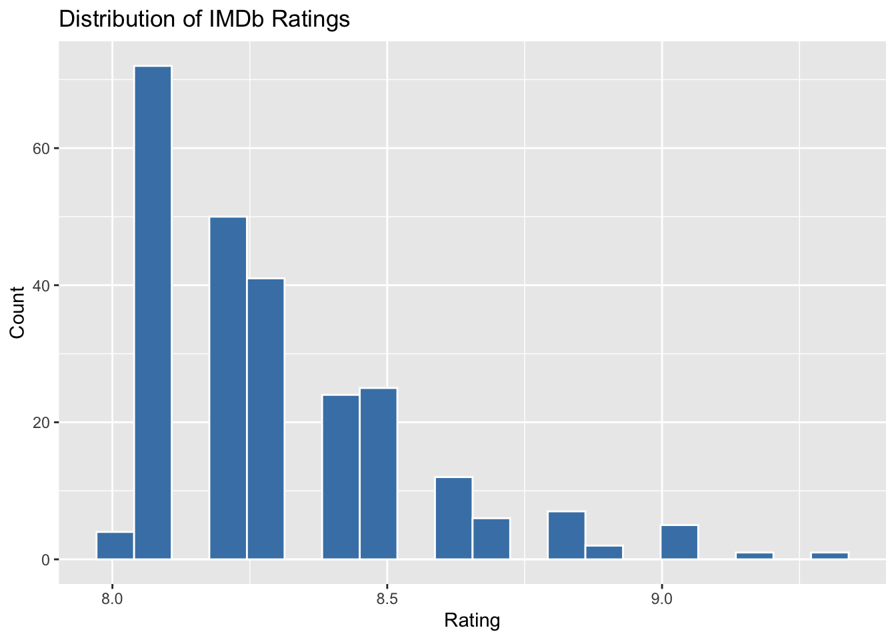
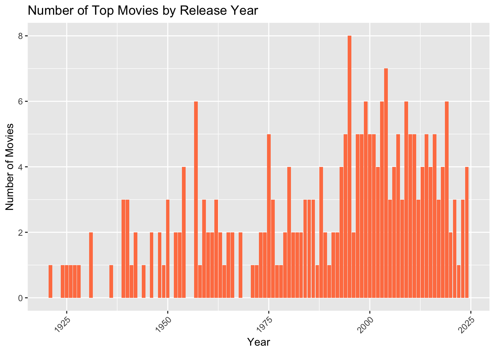

# web scraping
url <- "https://www.imdb.com/chart/top/?ref_=nv_mv_250"
raw_script <- read_html(url) |>
html_element("script#__NEXT_DATA__") |> # Escape the id selector
html_text()
top_movies <- str_match_all(raw_script, '"titleText":\\{"text":"(.*?)"')[[1]][,2]
year <- str_match_all(raw_script, '"releaseYear":\\{"year":(\\d{4})')[[1]][,2]
rating <- str_match_all(raw_script, '"aggregateRating":(\\d+(\\.\\d+)?)')[[1]][,2]
# Create as a dataframe
top250_movies <- tibble::tibble(
title = top_movies,
year = as.integer(year),
rating = as.numeric(rating)
) |>
arrange(desc(rating)) IMDb Top 250 Movie Dashboard
🎬 Overview
This dashboard visualizes the IMDb Top 250 movies, showing trends in ratings and allowing interactive exploration by year.
🏆 Key Highlights
🎬 Highest Rated Movie
The Shawshank Redemption with a rating of 9.3
🕰️ Oldest Movie
Released in 1921
🆕 Newest Movie
Released in 2024
📈 Rating Distribution
ggplot(top250_movies, aes(x = rating)) +
geom_histogram(bins = 20, fill = "steelblue", color = "white") +
labs(title = "Distribution of IMDb Ratings", x = "Rating", y = "Count")
📊 Number of Top Movies by Year
top250_movies |>
count(year) |>
ggplot(aes(x = year, y = n)) +
geom_col(fill = "coral") +
labs(title = "Number of Top Movies by Release Year", x = "Year", y = "Number of Movies") +
theme(axis.text.x = element_text(angle = 45, hjust = 1))
🔍 Movie Look Up
reactable(
top250_movies,
searchable = TRUE,
filterable = TRUE,
defaultPageSize = 10,
columns = list(
title = colDef(name = "Movie Title"),
year = colDef(name = "Year"),
rating = colDef(name = "Rating", format = colFormat(digits = 1))
)
)